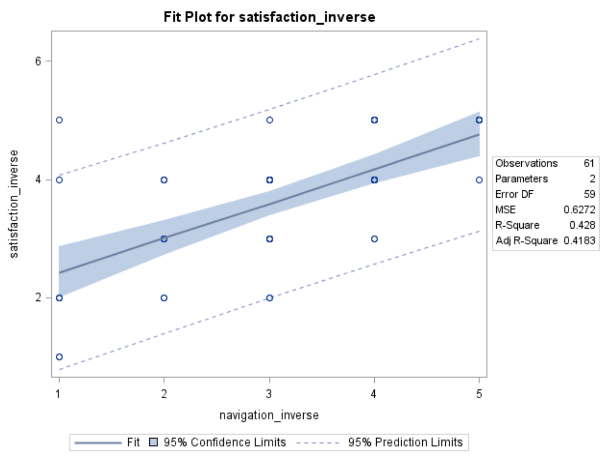
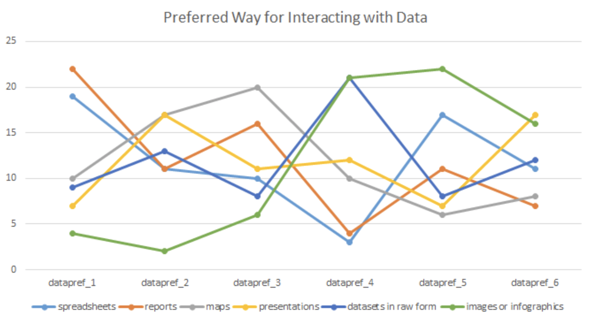
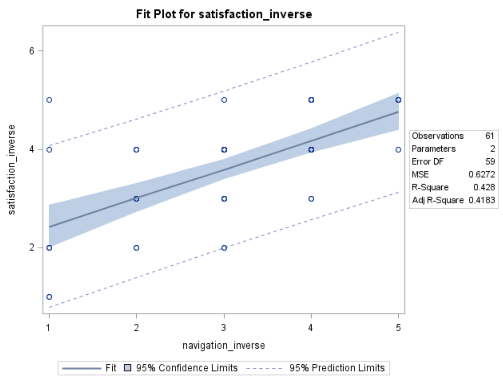
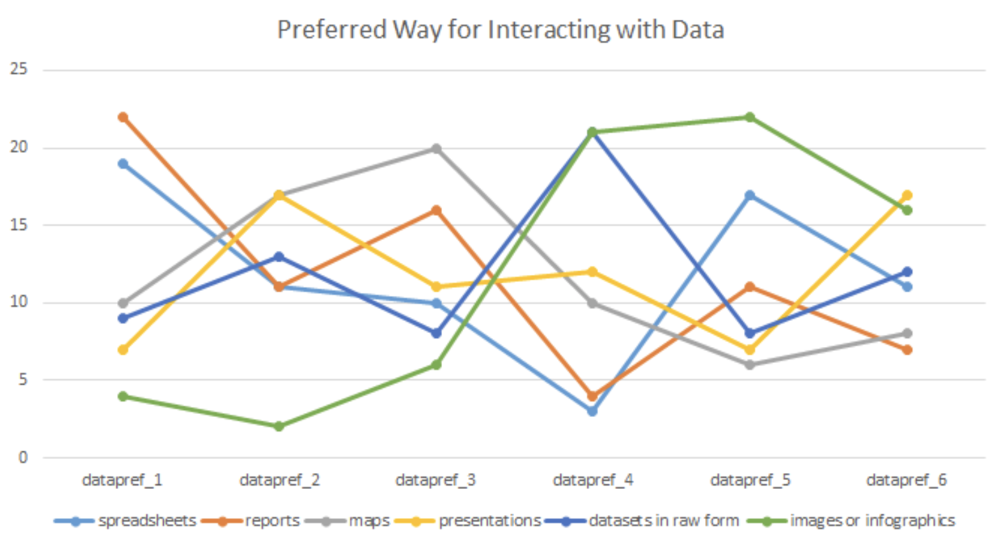

UX Reseach on Website of D3
Data Driven Detroit is a low-profit organization that collect, analyzes, interprets, and shares high-quality data to drive informed decision-making and increase data-driven outcomes.

We conducted UX research on Data Driven Detroit website using six main methods:
- Interaction map
- Interview
- Comparative Analysis
- Survey
- Heuristic Evaluation
- Usability Test
Interaction Map
Data Driven Detroit' website is to provides datasets for use, and services for data gathering and analysis.
There are five main sections of D3's website: data portal, Ask D3, blog, services and portfolio. We drew the site map as follows:
There three main problems surfacing:
- It is unclear what is the primary offering of the website and for whom
- “Open data portal” link is not easy to locate
- Redundant links on the home page
Interview
During this portion of the project exploring Data Driven Detroit’s website, we conducted 5 interviews with staff and external stakeholders.
...things are hard to find. So I will just go through all kinds of like, open each one of the tabs that I want to go through, just click on everything, see where I can get.
I think that D3 website, kind of lacks focus, in terms of, like the landing page...like recent project, the last one is January 20th, 2016, so it’s been a year old.
Here are our key findings:
- Website lacks storytelling
- Navigation is not clear and meaningful
- There are two types of users
- Homepage is not dynamic
- Visual experience of the website affects experience
Comparative Analysis
For quantitative measures, we pinpointed criteria under four dimensions of comparison that came up in the findings of our initial interview report: homepage, users, data and features.
| Dimension | Criteria | Measurement |
|---|---|---|
| Homepage | Data Visualizations | Y or N |
| Storytelling | Y or N | |
| Social Media | 1 - 5 | |
| Navigation | 1 - 5 | |
| Colorful | Y or N | |
| Accessibility | 1 - 5 | |
| Users | Easy to Read Content | Y or N |
| Raw Data | Y or N | |
| Icons for Navigation | Y or N | |
| Responsive Website | Y or N | |
| Readable on Mobile | Y or N | |
| Clarity in Contact Info | 1 - 5 | |
| Data | Brief Description | Y or N |
| Data Use Agreement | Y or N | |
| Favorite or similar | Y or N | |
| Features | Portfolio | Y or N |
| FAQ | Y or N | |
| Search | Y or N | |
| Newsletter | Y or N |
Survey
 



Our team created, tested, distributed, and analyzed the results of a survey aimed at learning more about the expectations and needs of Data Driven Detroit’s (D3) users.
Specifically, we explored how users expect to find and use data on D3’s website and how their expectations are being met or are falling short in their use of the current website. This survey helped us predict behaviors and preferences of users of the website.
Heuristic Evaluation
In this heuristic evaluation, our team chose six heuristic measurements, adapted from Nielsen’s Ten Usability Principles, to test the usability of Data Driven Detroit’s (D3) website. These included:
| HEURISTIC & DESCRIPTION |
|---|
| Visibility of system status : The system should always keep users informed about what is going on, through appropriate feedback within reasonable time. |
| Aesthetic and minimalist design : Dialogues should not contain information which is irrelevant or rarely needed. Every extra unit of information in a dialogue competes with the relevant units of information and diminishes their relative visibility. |
| User control and freedom : Users often choose system functions by mistake and will need a clearly marked "emergency exit" to leave the unwanted state without having to go through an extended dialogue. Support undo and redo. |
| Recognition rather than recall : Minimize the user's memory load by making objects, actions, and options visible. The user should not have to remember information from one part of the dialogue to another. Instructions for use of the system should be visible or easily retrievable whenever appropriate. |
| Flexibility and efficiency of use : Accelerators -- unseen by the novice user -- may often speed up the interaction for the expert user such that the system can cater to both inexperienced and experienced users. Allow users to tailor frequent actions. |
| Match between system and the real world : The system should speak the users' language, with words, phrases and concepts familiar to the user, rather than system-oriented terms. Follow real-world conventions, making information appear in a natural and logical order. |

Usability Test
We designed the test based on our previous studies, intentionally trying to confirm suspicions about the site’s usability and evaluate aspects that we have not yet focused on. To this end, our study focused on 4 core areas
1. You want to know what Data Driven Detroit does. Find out what their mission is.
2. You’re curious about Data Driven Detroit’s business model. Find out if they charge for their services.
3. You’re interested in hiring D3 to do some data collection for your business. Submit a request to start a business contract with D3.
1. You’re thinking about switching your child to a new school. A friend told you about a report that D3 published a few years ago regarding the commute distances for different schools in Detroit. You’d like to look at that report to see how far students normally travel to get to some schools you’re considering. Find that report.
2. You want to know more about the raw data from that report. Find the corresponding dataset about commute time for students in Detroit.
1. You run into a friend and tell them about your recent interest in D3’s work. They mention that they know an employee there, Meghin, but can’t remember her title. Find a list of the employees and their titles.
2. You want to know if Meghin has contributed to the blog. Find out if Meghin has published any blog posts.
3.Find out when that post was published.
1. You’re interested in learning about some of the interactive tools that D3 has created. Find one of them and play around with it.